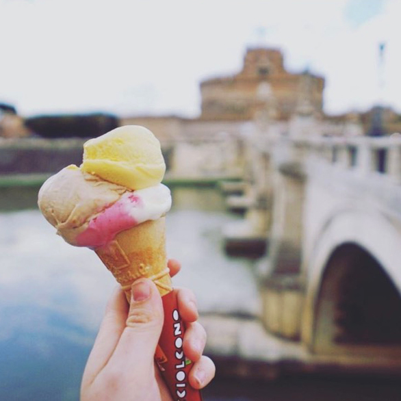
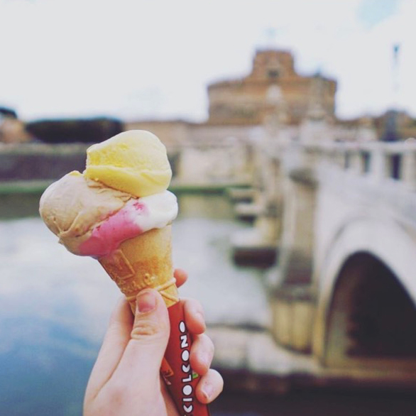

Hey, I’m Melissa. I’m a user experience designer and photographer living in Bangor, Northern Ireland.
In 2013 I graduated from Interactive Multimedia Design with first class honours and began my career in the web industry. I spent two years with the amazing team at Rumble Labs gaining a wide range of experience, designing and building web apps, before joining the talented bunch at web design studio, Eyekiller.
2017 has led me to transition from web design to product design as I'm now working at Belfast-based SaaS company, TheAppBuilder, striving to better the user experience of their platform.
In my spare time I’ll usually be found with my camera in hand or behind the screen editing my photos with Lightroom. I’m a huge animal lover and so my Instagram is generally filled with shots of cute animals, including my little mutt, Matisse.
My hobbies include running a few miles along Bangor’s pretty coastline, pairing good food with great wine, attending local tech/design meetups and catching up with my favourite shows. Right now these include Game of Thrones, Orange is the New Black and Suits.